11 cores
11 cores
Textura anarrugada com acabamento brilhante e sofisticado. Excelente para saídas de praia e peças de destaque.
Ver cores 25 cores
25 cores
Leveza e frescor com textura anarrugada especial para coleções praia. Toque agradável e secagem rápida.
Ver cores 5 cores
5 cores
A malha Arezzo traz um design exclusivo, inspirado nas artes geométricas, com quadriculados em alto relevo que criam um visual bicolor cheio de charme, sofisticação e personalidade.
Ver cores 6 variações
6 variações
Textura bouclê clássica com laçinhos característicos. Tecido nobre para peças com personalidade e sofisticação.
Ver cores
Variação exclusiva do bouclê com relevo em formato de pétalas. Exclusividade e charme para sua coleção.
Ver cores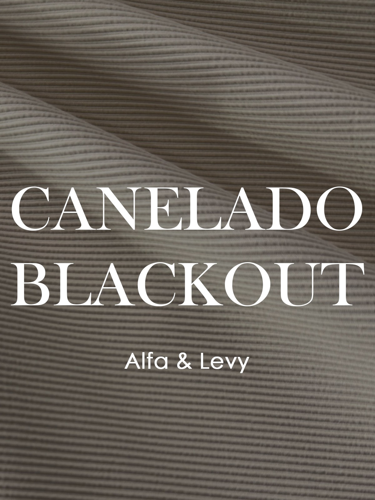
7 coresTextura canelada com acabamento black. Ideal para peças de fitness com estilo e conforto.
Ver cores 50+ cores
50+ cores
Alta compressão com textura canelada diferenciada. Modelagem corporal e suporte para treinos intensos.
Ver cores 36 cores
36 cores
Textura em poliamida brilhante de efeito canelado. Estruturado e confortável, pode ser aplicado desde modelagens básicas de moda praia até peças de média compressão. A boa elasticidade e cobertura permitem sua aplicação também no segmento de fitness. O efeito brilhante intensifica a tonalidade das cores, dos mais claros aos mais escuros.
Ver cores 40+ cores
40+ cores
Textura canelada com brilho sutil e caimento impecável. Versátil para moda casual e fitness.
Ver cores
Acabamento delicado com textura canelada fina. Leveza e conforto incomparáveis para lingerie premium.
Ver cores 36 cores
36 cores
Textura canelada com relevo sutil e toque macio. Ideal para peças de moda praia e casual com estilo.
Ver cores 18 cores
18 cores
Canelado com textura marcante e toque suave. Ótima elasticidade para peças fitness de alto desempenho.
Ver cores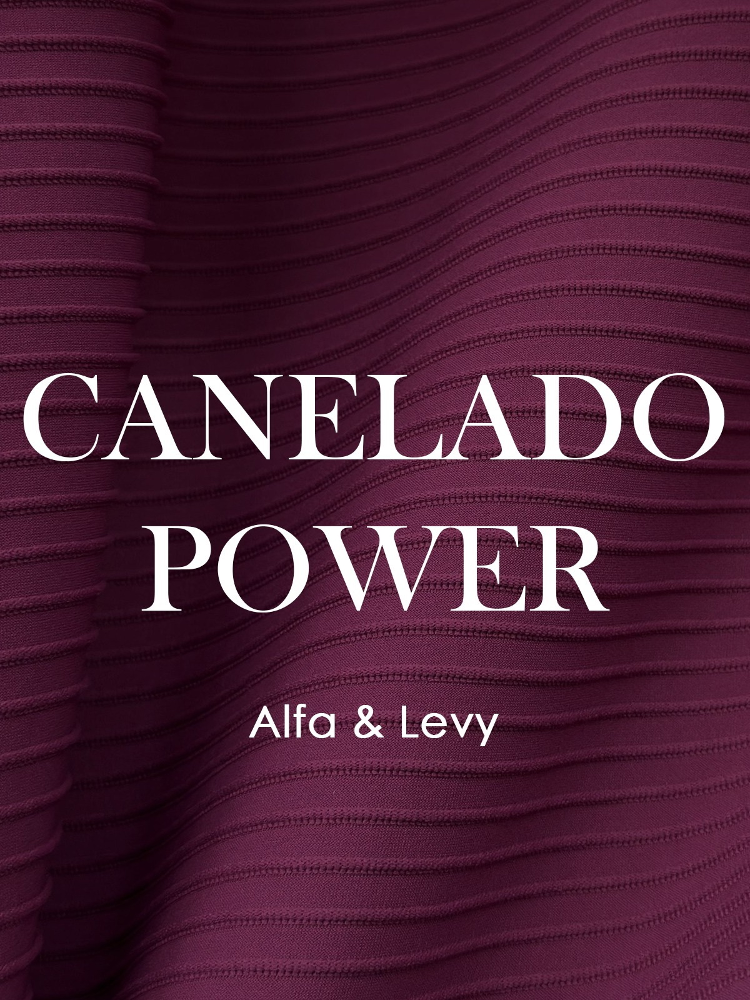
12 coresTextura canelada com relevo sutil e toque macio. Ideal para peças de moda praia e casual com estilo.
Ver cores 5 variações
5 variações
Alta elasticidade e conforto para o movimento. Tecnologia avançada para peças fitness.
Ver cores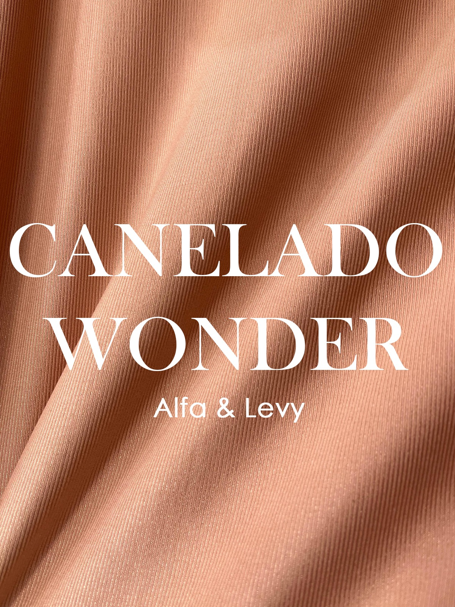
15+ coresEstilo e performace, onde o artigo apresenta ótima elasticidade assertivo para valorizar a silhueta com conforto. Desenvolvido com a tecnologia Lycra® Xtra-life que garante maior durabilidade das peças e maior resistência a danos causados pelo cloro, suor, protetores solares, cremes e óleos corporais.
Ver cores 26 cores
26 cores
Tecido de aspecto sensorial creponado, reúne as seguintes características técnicas da malharia: Double-face, pode ser usado em ambas as superfícies; Construção discretamente aerada, ajuda na passagem do ar; Caimento para peças que peças que buscam bem-estar e relaxamento.
Ver cores 22 cores
22 cores
Leveza e fluidez incomparáveis para peças com acabamento delicado e elegante.
Ver cores 9 cores
9 cores
Superfície texturizada e leve para saídas de praia com estilo e personalidade.
Ver cores 8 cores
8 cores
Inspiração mediterrânea com textura crochê única. Sofisticação e leveza para coleções verão.
Ver cores
Com estrutura dupla e alta gramatura, a malha CROCHETE possui textura inspirada nos produtos artesanais, com aparência rústica e efeito de crochê produzido à mão. Em poliamida opaca com elastano, confere ao usuário conforto e muita maciez. Ideal para peças da moda praia, pode ser utilizado no segmento Fitness e em peças de moda casual.
Ver cores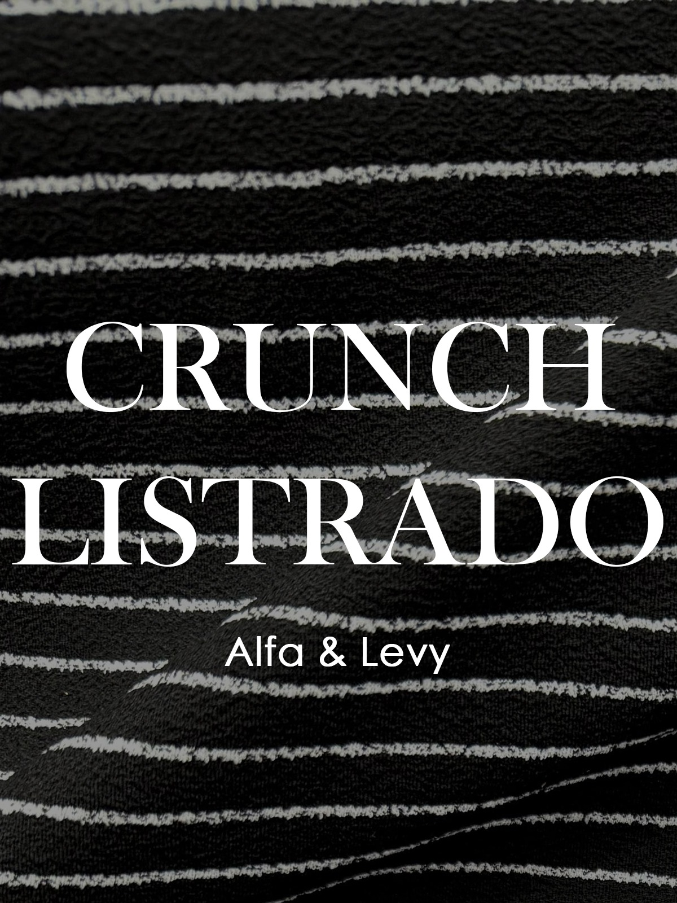
7 coresTextura crunch com listras em relevo. Estilo e personalidade para suas coleções.
Ver cores
Toque acetinado e brilho sutil. Acabamento liso de alta qualidade para peças sofisticadas.
Ver cores 17 variações
17 variações
A malha JACQUARD BROCADO possui textura trabalhada com retenção e bastante volume, enriquecendo e agregando valor às peças, mesmo quando em modelagens básicas. Em poliamida opaca com elastano, é comercialmente usada com o lado avesso para fora. Versátil, possui elasticidade e compressão ajustadas. É confortável e pode ser utilizada também na moda praia ou casual. Nas peças Fitness, garante segurança por ser zero transparência durante a realização dos movimentos. FPU 50+ vitalício devido ao fio de poliamida ser enriquecido com dióxido de titânio em sua massa.
Ver variações
Motivo de conchas tecido em jacquard. Inspiração marinha com acabamento sofisticado.
Ver variações 7 variações
7 variações
Variação delicada do jacquard conchas com padrão menor e detalhes refinados.
Ver variações 12 variações
12 variações
Trama jacquard com efeito degradê exclusivo. Tecido nobre para coleções diferenciadas.
Ver variações
Trama jacquard com padrão exclusivo inspirado em motivos esportivos. Ideal para coleções fitness com estilo.
Ver variações
Trama jacquard com padrão exclusivo inspirado em motivos orientais. Sofisticação e elegância para coleções diferenciadas.
Ver variações
Padrão jacquard com motivo folhagem exclusivo. Sofisticação e elegância natural para coleções diferenciadas.
Ver variações
Padrão jacquard com linhas entrelaçadas formando um padrão exclusivo. Elegância e modernidade para suas coleções.
Ver variações
Com estrutura dupla e alta gramatura, a malha JACQUARD NILO possui textura inspirada nos produtos artesanais, com aparência listrada e efeito de crochê rendado produzido à mão. Em poliamida opaca com elastano, confere ao usuário conforto, muita maciez e excelente cobertura. Ideal para peças da moda praia, é perfeito para peças com áreas maiores, como maiôs. Pode ser utilizado no segmento Fitness e em peças de moda casual.
Ver variações 5 variações
5 variações
Padrão jacquard com padrão exclusivo inspirado em motivos esportivos. Ideal para coleções fitness com estilo.
Ver variações 6 variações
6 variações
A malha Jacquard Lis traz um design exclusivo inspirado nas artes dos azulejos clássicos e na icônica Flor de Lis, símbolo de nobreza e sofisticação. O relevo bicolor dá um charme único, com um toque artístico e refinado. Feita em poliamida opaca com elastano, oferece conforto extremo e maciez incomparável. Ideal para moda praia e perfeita também para compor looks casuais com um estilo feminino, delicado e super romântico. FPU 50+ vitalício devido ao fio de poliamida ser enriquecido com dióxido de titânio em sua massa. Possui certificação OEKO-TEX, garantindo que não há químicos nocivos aos usuários em sua fabricação..
Ver cores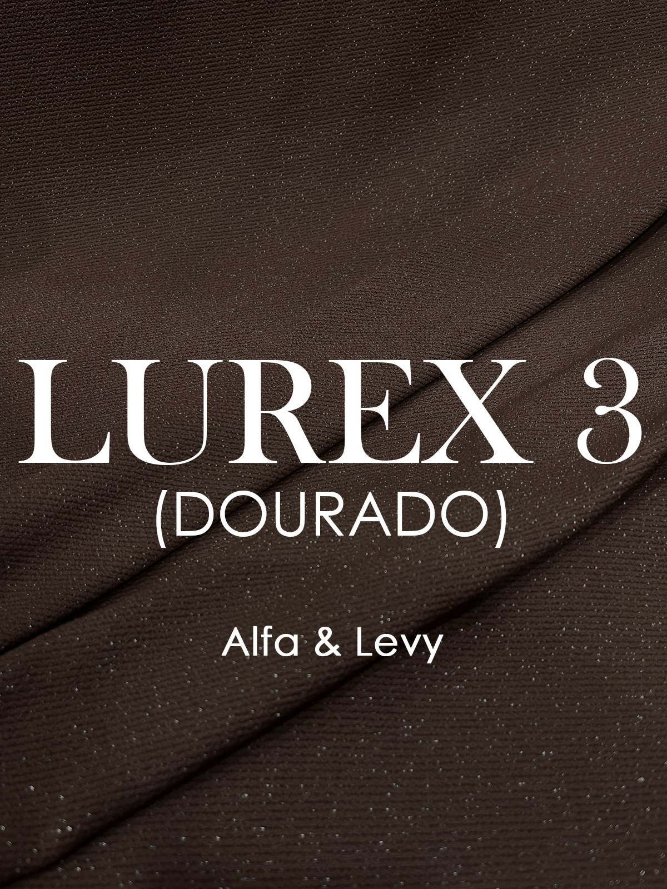
6 variaçõesTextura com fios de lurex dourados que conferem brilho e sofisticação. Ideal para peças de destaque e coleções especiais.
Ver cores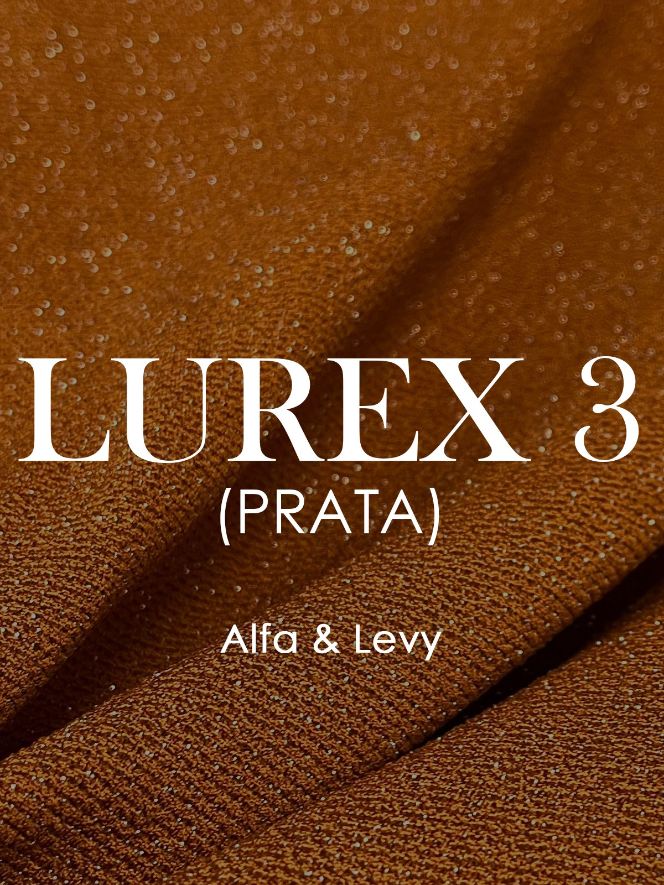
25+ coresTextura com fios de lurex prata que conferem brilho e sofisticação. Ideal para peças de destaque e coleções especiais.
Ver cores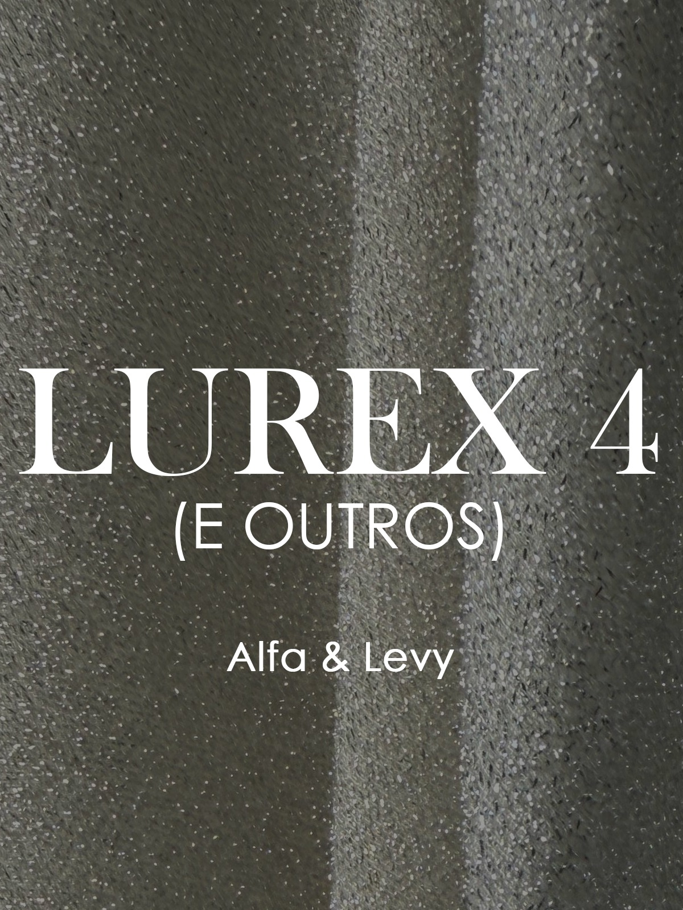
20+ coresTextura com fios de lurex que conferem brilho e sofisticação. Ideal para peças de destaque e coleções especiais.
Ver cores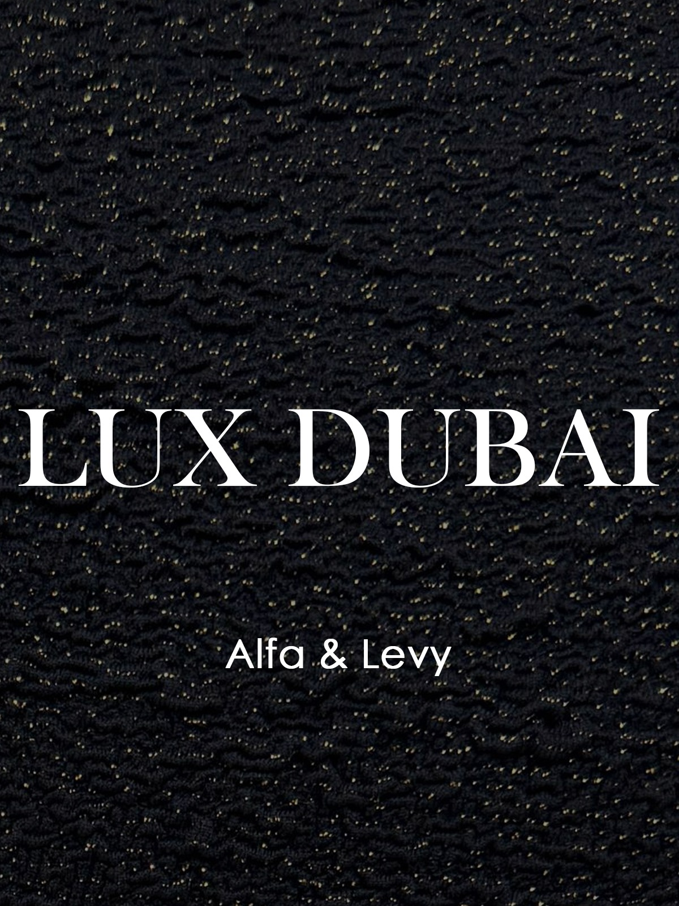
Tecido texturizado de alta performance com toque macio e excelente recuperação.
Ver cores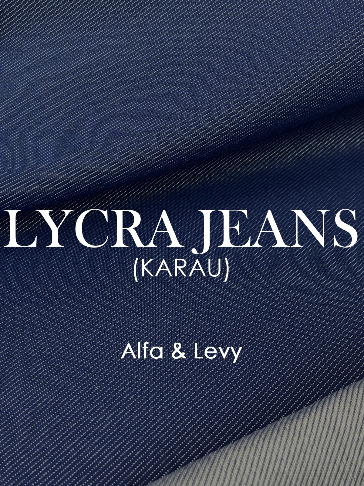
Tecido texturizado de alta performance com toque macio e excelente recuperação.
Ver cores
Textura artesanal com nós e vazados característicos do macramê. Peças com personalidade e estilo único.
Ver variações 15+ cores
15+ cores
Textura leve e fluida com toque macio. Ideal para peças com caimento suave e conforto excepcional.
Ver variações 11 cores
11 cores
Com estrutura dupla e alta gramatura, a malha MALTE possui textura inspirada nos produtos artesanais, com aparência rústica e efeito de produzido à mão. Em poliamida opaca com elastano, confere ao usuário conforto e muita maciez. Ideal para peças da moda praia, pode ser utilizado no segmento Fitness e em peças de moda casual. FPU 50+ vitalício devido ao fio de poliamida ser enriquecido com dióxido de titânio em sua massa .
Ver variações
Artigo desenvolvido em malha com fio trilobal, que confere um efeito similar ao shantung plano. A presença de elastano o torna ideal para confecção de moda praia. Em peças de lingerie, funciona como um falso liso e destaca-se em peças de linha dia e linha noite combinadas com rendas. Em tons profundos, torna-se sofisticado. Possui gramatura e compressão adequadas para peças esportivas de compressão moderada, aplicando-se também ao conceito do fitness fashion.
Ver variações 5 variações
5 variações
É ua malha de alta performace desenvolvida para moda fitness e praia. Oferece excelente elasticidade, rápida recuperação e toque macio, garantindo conforto, compressão na medida e durabilidade. Estrutura estável que não deforma com o uso. Ideal para peças que precisem de caimento impecável e liberdade de movimento.
Ver variações 11 cores
11 cores
Visual compacto e sem transparência. Sua construção estruturada extrapower no comprimento garante suporte nas práticas esportivas, com flexibilidade quando exigido.
Ver variações 11 cores
11 cores
Textura leve e fluida com toque macio. Ideal para peças com caimento suave e conforto excepcional.
Ver variações
Textura leve e fluida com toque macio. Ideal para peças com caimento suave e conforto excepcional.
Ver variações
Textura rochosa com toque macio e caimento fluido. Ideal para peças com personalidade e estilo marcante.
Ver variações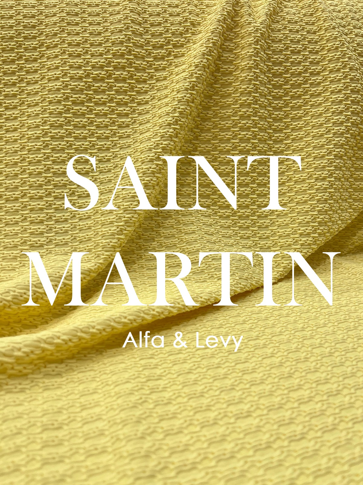
20+ coresCom visual tridimensional, o artigo confere tecnologia com conforto. Proporciona visual de tecido feito a mão, tem bom caimento e boa elasticidade para permitir a confecção de peças com modelagens drapeadas e torcidas. Foi desenvolvido para atender ao mercado de praa com forte impacto visual na confecção de biquínis e maiôs.
Ver variações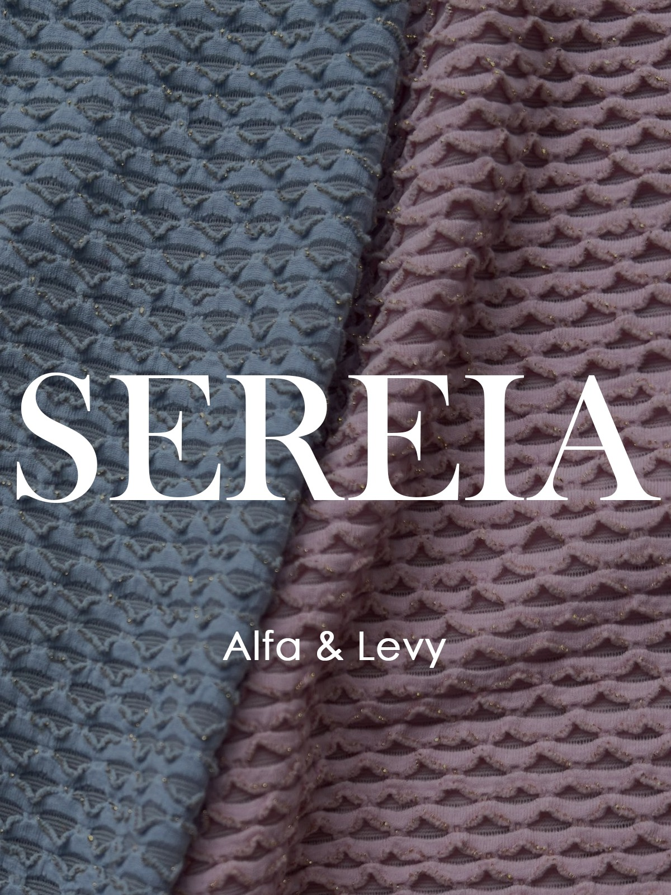
4 variaçõesTextura leve e fluida com toque macio. Ideal para peças com caimento suave e conforto excepcional.
Ver variações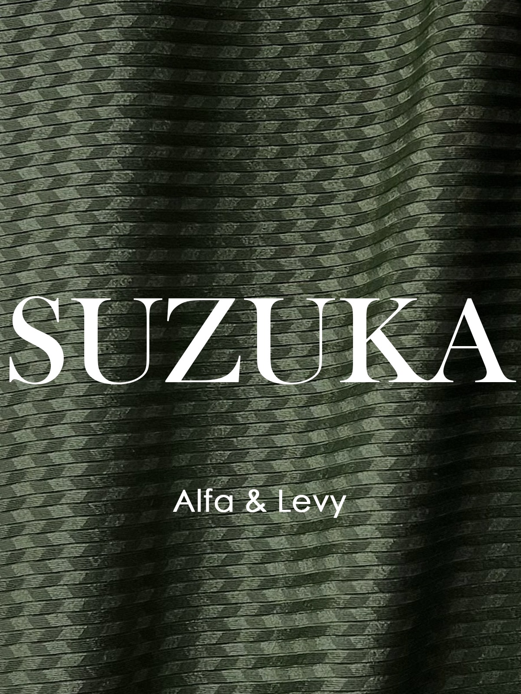
Textura leve e fluida com toque macio. Ideal para peças com caimento suave e conforto excepcional.
Ver variações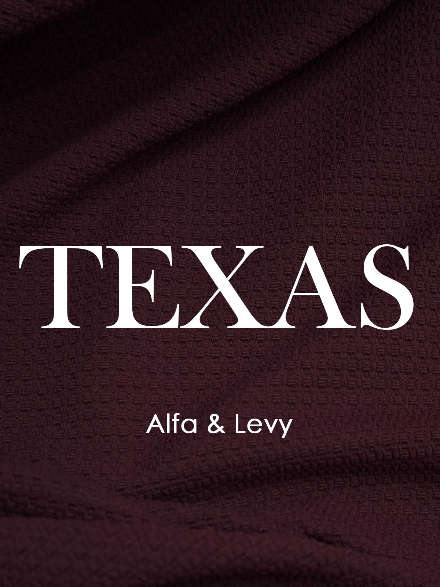
15+ coresTextura leve e fluida com toque macio. Ideal para peças com caimento suave e conforto excepcional.
Ver variações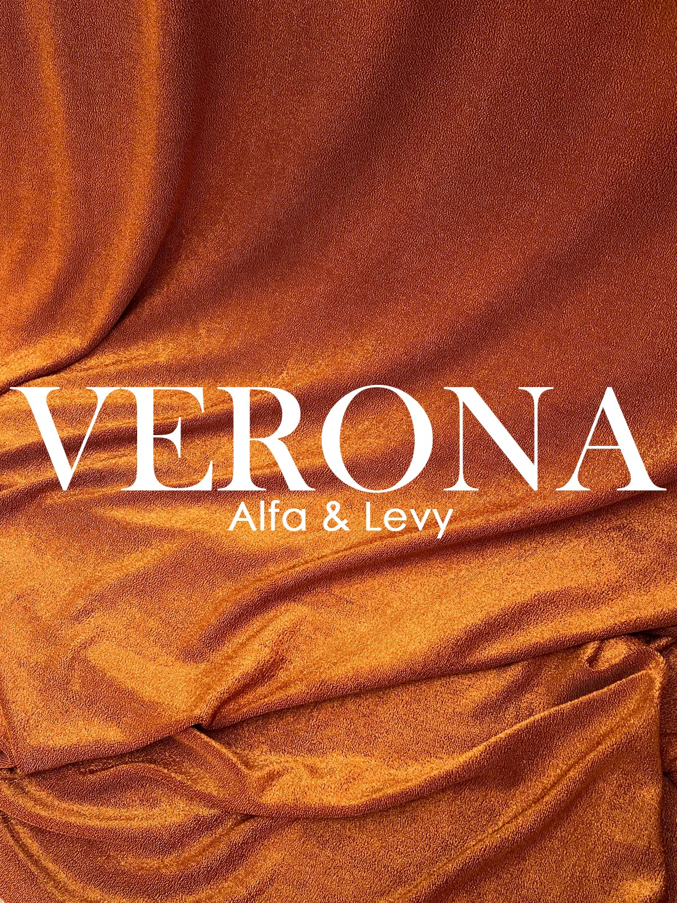
25+ coresTextura leve e fluida com toque macio. Ideal para peças com caimento suave e conforto excepcional.
Ver variações